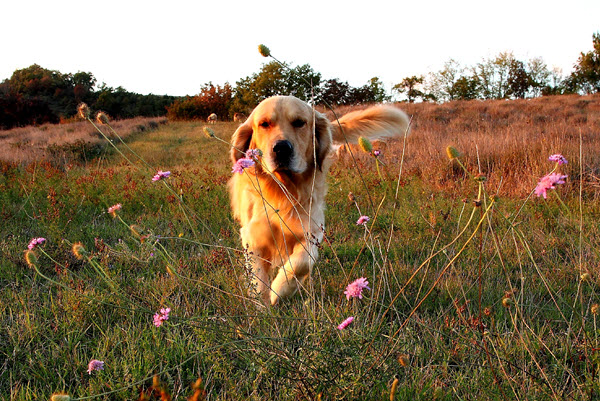

About the Golden Retriever
The Golden Retriever is a large dog breed that weighs approximately 65-75 lbs. (males) and 55-65 lbs. (females). They originated in Scotland, where they were bred as companion dogs to hunters, who would train them to retrieve shot waterfowl like ducks and geese. A specialized skill of the breed is their ability to retrieve shot game without damaging it.
Most Golden Retrievers love the water and will take any opportunity for a swim. They are easy to train and have long top coats, with a dense under coat that provides warmth when outdoors. The top coat lies flat on their bodies and helps to repel water.
Golden Retrievers make great family dogs and adapt to suburban and country settings, though they do require space for outdoor exercise.